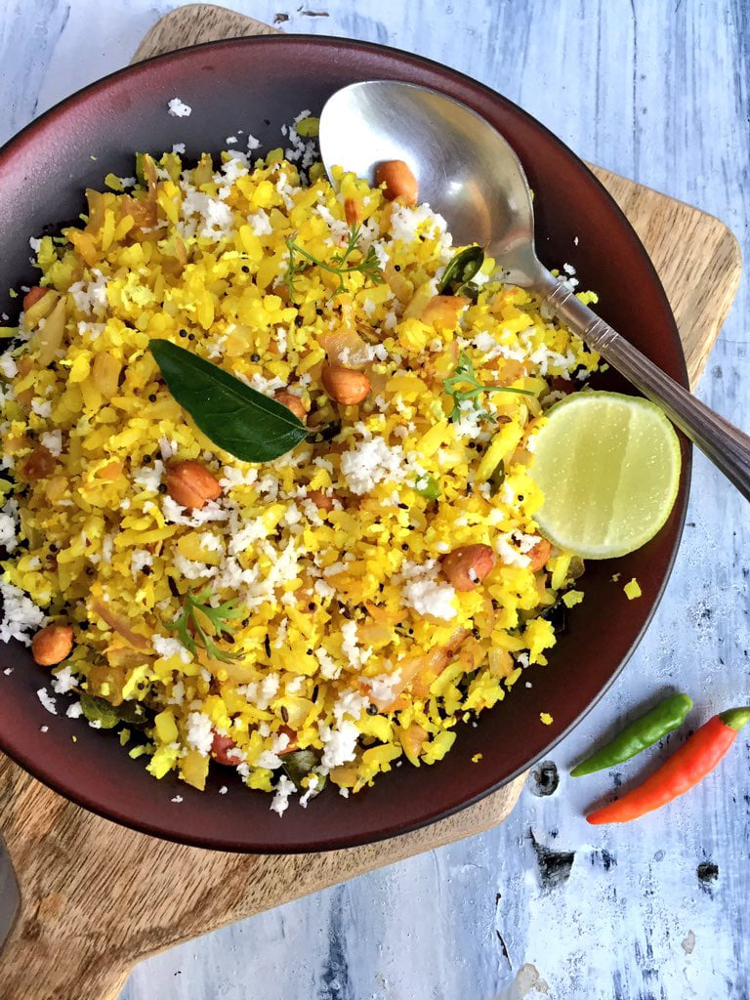

Poha

Varan Bhaat is a simple and quick Maharashtrian style dal (lentils curry) and rice recipe.
The Maharashtrian dish Varan Bhaat holds a special place in my
heart as it evokes nostalgic memories of my childhood spent with cousins,
enjoying hearty meals of VBT (Varan-Bhaat-Tup) paired with freshly pickled mango.
It's amazing how food and memories are intertwined and can transport us back in time.
This simple yet satisfying meal is a significant part of Maharashtrian
identity and always makes me feel like I'm back home.
The tender mutton once coated and cooked in the masala, will literally fall off the bone,
a dish that you will want to make for your family this weekend.
Ingredients
- 1 Cup Split Pigeon Peas Dal/Split Moong Dal(Lentils)
- 1 Tsp Turmeric
- 1 Pinch Asafetida
- 5 Green chilies, chopped
- 1 Tsp Cumin seeds
- 2 tbsp of oil
- Salt to taste
- 2 tbsp of fresh coconut
- 1/2 inch ginger
- 2 Cups Water
- 1 Cup Rice + 1 ½ Cup Water + Salt to taste
- 2 tbsp Ghee for topping
Steps
- Soak the dal for 20-30 minutes.
Rinse several times
- Add salt, turmeric, hing and enough water to get the dal to the desired consistency.
Bring to a boil and then turn the heat off.
- Cook (on stove-top or instant pot or pressure cooker) till the dal is completely cooked.
Use the back of a ladle to mash the dal into a coarse pulp.
- You can cook the rice in the rice cooker.
- Grind the green chillies, ginger and fresh coconut together
- Heat oil in another pan, add jeera and ground paste, mix for 5 mins
- Pour the whole tempering in the dal.
- Cover and let the tempering flavors infuse with the dal for about 5-6 minutes.
- Serve hot with steamed rice with a spoon on ghee on top.